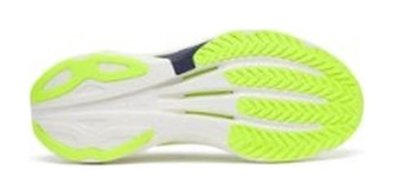
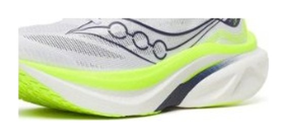

SUPER TRAINER｜スピード練習
万能を捨て、速さに振った。
「ジョグにもスピード練習にも使える万能靴」だったエンドルフィン スピードが、第6世代で性格を変えた。軽く、速く、そしてジョグには硬くなった。これ1足で全部済ませたい人は、前作のイメージで買わないほうがいい。
閾値走、インターバル、マラソンペース走の質を上げたい人。カーボンレーサーを練習で減らしたくない人。
1足で毎日のジョグまで済ませたい人。ゆったりした接地感が好きだった前作ファン。
注意：米国発売は2026年10月15日。国内価格・発売は未定。


2mm厚くなったのに、前作比で約15〜20g軽い。普通は厚くすれば重くなるので、新フォームの軽さがそれだけ効いている。保護性能が上がったぶん、ハーフやフルの実戦にも投入しやすくなった。
PWRRUN PBXは従来のPWRRUN PBより弾性率を高めた配合で、反発は増えたが、低い負荷では沈み込みが減った。プレートは剛性配分を見直し、前足部へ体重が移る時にカーボンに近いスナップを出す。どちらも「高い出力で効く」方向の変更だ。ジョグで硬く感じるのは欠陥ではなく、設計の結果である。
ノヴァブラストは公称、スピード 6は上限値、プロ5は実測。
| エンドルフィン スピード 6 | ノヴァブラスト 6 | エンドルフィン プロ5 | |
|---|---|---|---|
| 役割 | スピード練習 | ジョグ〜テンポ | レース |
| 重量 | 227〜230g（US9） | 約253g（US9） | 実測215g（US9） |
| プレート | ナイロン | なし | カーボン |
| 価格 | $175〜$180（国内未定） | ¥17,600（$155） | ¥37,400 |
レース靴プロ5との重量差はわずか10g台。練習靴としてはかなり軽い。一方、ノヴァブラスト 6とは約25gの差があり、ジョグの快適さはノヴァブラストが上だ。両者は競合というより、役割の分担相手と考えるのが正しい。
Doctors of RunningやAlastair Runningなど海外の専門媒体は、「デイリーを兼ねる万能機」から「明確なスピードセッション特化機」へ舵を切ったと結論づけている。閾値走、インターバル、マラソンペース走では「シリーズ最速」のレスポンスとの評価だ。
逆に低速では、プレートの硬さとフォームの張りが前に出て、前作の「ゆったりした接地感」は後退した。履き慣らしに一定の距離が要るランナーもいる。
平日にポイント練習を1本入れるなら、その専用機だ。高価なカーボンレーサーの摩耗を抑えつつ、レースに近い脚への負荷を日常の閾値走で再現できる。本番がアディオス プロ5やアルファフライ 4なら組み合わせとして合理的だ。
ただし2足目以降の靴である。最初の1足にはしない。ジョグ用を持っていない人は、先にノヴァブラスト 6かウエーブライダー 30を買うこと。
万能性を捨てて、速さに振った世代。ポイント練習の靴を探している人には有力で、1足で全部やりたい人には外れになる。前作の評判で選ばず、用途で選ぶこと。
※本記事はメーカー公表値と国内外のレビューをもとにした分析です。国内の価格・発売情報は判明次第、変わる可能性があります。